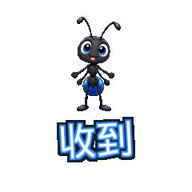
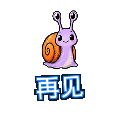

哈哈 · 内置
haha-dumpling-giggle16帧 / 1600ms / 181812 bytes
haha-dumpling-giggle16帧 / 1600ms / 181812 bytes
haha-redpanda-laugh16帧 / 1600ms / 196379 bytes
haha-office-friend16帧 / 1600ms / 210655 bytes
haha-bubble-burst16帧 / 1600ms / 214929 bytes
haha-plush-llama16帧 / 1600ms / 145272 bytes
haha-ink-frog16帧 / 1600ms / 173634 bytes
haha-person-laugh16帧 / 1600ms / 184574 bytes
haha-toaster-pop16帧 / 1600ms / 157867 bytes
cheer-dumpling-pump16帧 / 1600ms / 198489 bytes
cheer-shiba-paws16帧 / 1600ms / 166083 bytes
cheer-runner-friend16帧 / 1600ms / 228570 bytes
cheer-arrow-rise16帧 / 1600ms / 173276 bytes
cheer-clay-tiger16帧 / 1600ms / 192212 bytes
cheer-ink-bird16帧 / 1600ms / 166226 bytes
cheer-person-support16帧 / 1600ms / 180457 bytes
cheer-pencil-rocket16帧 / 1600ms / 163998 bytes
roger-dumpling-salute16帧 / 1600ms / 175414 bytes
roger-meerkat-alert16帧 / 1600ms / 146514 bytes
roger-workshop-maker16帧 / 1600ms / 199377 bytes
roger-envelope-click16帧 / 1600ms / 206364 bytes
roger-plush-raccoon16帧 / 1600ms / 171260 bytes

roger-ink-ant16帧 / 1600ms / 138142 bytes
roger-person-nod16帧 / 1600ms / 169112 bytes
roger-radar-bot16帧 / 1600ms / 146316 bytes
allow-dumpling-yes16帧 / 1600ms / 175099 bytes
allow-quokka-smile16帧 / 1600ms / 152403 bytes
allow-cafe-friend16帧 / 1600ms / 178921 bytes
allow-green-gate16帧 / 1600ms / 130672 bytes
allow-clay-capybara16帧 / 1600ms / 170600 bytes
allow-ink-crab16帧 / 1600ms / 204432 bytes
allow-person-yes16帧 / 1600ms / 163527 bytes
allow-traffic-go16帧 / 1600ms / 142614 bytes
bye-dumpling-wave16帧 / 1600ms / 166627 bytes
bye-puffin-wave16帧 / 1600ms / 165660 bytes
bye-traveler-friend16帧 / 1600ms / 181114 bytes
bye-paperplane-away16帧 / 1600ms / 137018 bytes
bye-plush-fox16帧 / 1600ms / 165011 bytes

bye-ink-snail16帧 / 1600ms / 167869 bytes
bye-person-wave16帧 / 1600ms / 172360 bytes
bye-suitcase-hop16帧 / 1600ms / 156655 bytes